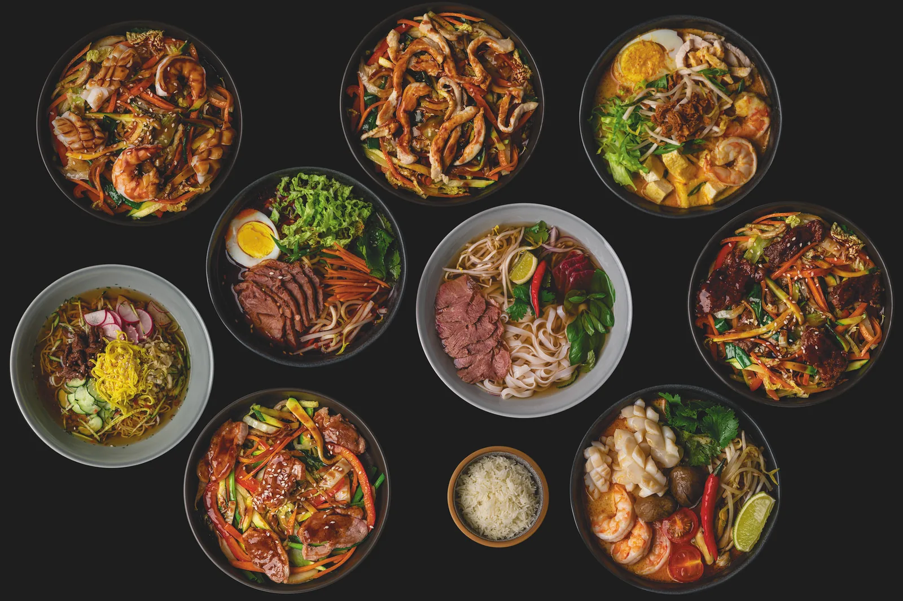

ПАНАЗИАТСКАЯ КУХНЯФО БО · ТОМ ЯМ · ВОК
Тонкий По
Паназиатское кафе
в Красногорске.
Ильинское-Усово, ул. Архангельская, 15Среда–воскресенье, 11:00–22:00
Открыть менюВ КАФЕ, С СОБОЙ И ДОМОЙВыбрать блюда

Ильинское-Усово, ул. Архангельская, 15Среда–воскресенье, 11:00–22:00
Открыть меню